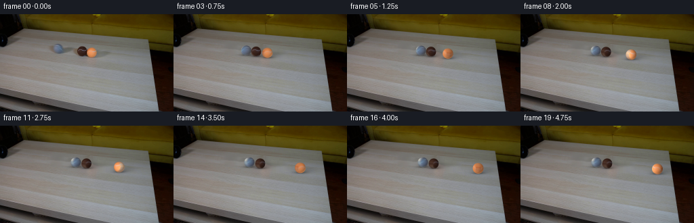
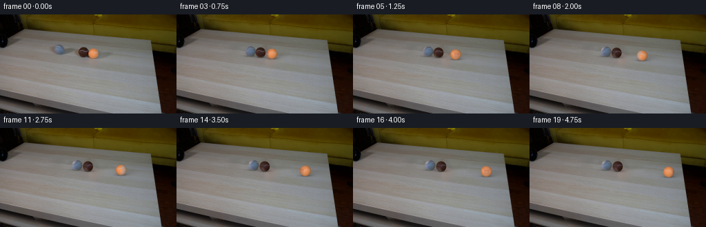
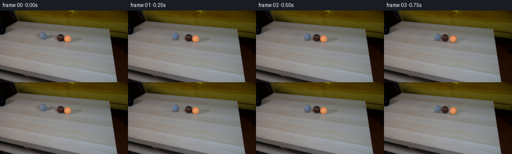
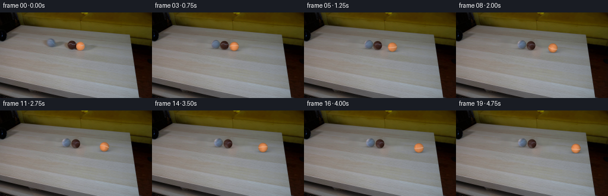
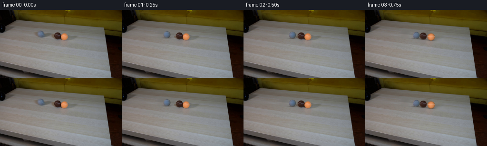

CODING AGENTS AS PIXEL WORLD MODELS
traex/GPT-6.1-Sol · 0030
点击播放 · 原生 RGB 像素
逐轮保存的候选
回放视频、检查图与代码变化。
每份候选均可单独播放。实际图片检查记录在下方工具轨迹中。
候选 01播放与检查图
点击播放 · 原生 RGB 像素

展开代码变化
--- 上一保存版本
+++ 本次保存版本
@@ -0,0 +1,160 @@
+from pathlib import Path
+import numpy as np
+from PIL import Image
+import cv2
+from scipy.ndimage import gaussian_filter, map_coordinates
+import artifact_io
+
+ROOT=Path(__file__).resolve().parent
+H,W=144,256
+SRC=np.asarray(Image.open(ROOT/'first_frame.png').convert('RGB'),dtype=np.uint8)
+Y,X=np.mgrid[:H,:W].astype(np.float64)
+
+# Only the little occupied area of the tabletop is reconstructed. Everything
+# outside it, including the camera, pipe, and edges of the table, stays fixed.
+graymask=(((X-86.5)/10.1)**2+((Y-51.2)/9.5)**2<1)
+graymask |= (((X-95.4)/18.0)**2+((Y-52.8)/5.1)**2<1)
+graymask |= (((X-77.2)/7.8)**2+((Y-50.2)/6.1)**2<1)
+graymask &= X<114
+pairmask=(((X-126.4)/19.5)**2+((Y-55.4)/12.0)**2<1)
+pairmask |= (((X-148.8)/22.0)**2+((Y-59.5)/8.0)**2<1)
+mask=graymask | pairmask
+background=cv2.inpaint(SRC,(mask.astype(np.uint8)*255),5,cv2.INPAINT_NS).astype(np.float64)
+# Restore a small amount of the same sensor/fine tabletop grain in the fill.
+texture=SRC.astype(float)-gaussian_filter(SRC.astype(float),(1.2,1.2,0))
+texture=np.clip(np.roll(texture,26,axis=0),-3.5,3.5)*.45
+background[mask]+=texture[mask]
+background=np.clip(background,0,255)
+partial=SRC.astype(np.float64).copy()
+partial[graymask]=background[graymask]
+
+# Measurements of the three original silhouettes in the supplied frame.
+balls=[dict(cx=86.55,cy=51.05,rx=7.45,ry=7.35),
+ dict(cx=120.80,cy=54.85,rx=7.35,ry=7.55),
+ dict(cx=135.35,cy=56.35,rx=7.70,ry=7.65)]
+light=np.array([-.46,-.51,.73]); light/=np.linalg.norm(light)
+
+def lighting(nx,ny,nz):
+ return .55+.45*np.maximum(0,light[0]*nx+light[1]*ny+light[2]*nz)
+
+# Recover camera-facing felt and seams from the source, rather than drawing
+# flat colored discs. On the hidden hemisphere the texture is reflected;
+# sphere rotation then moves the visible seams while lighting stays fixed.
+T=192
+u=(np.arange(T)+.5)/T*2-1
+TY,TX=np.meshgrid(u,u,indexing='ij')
+rr=np.sqrt(TX*TX+TY*TY)
+for b in balls:
+ xx=b['cx']+TX*b['rx']; yy=b['cy']+TY*b['ry']
+ observed=np.stack([map_coordinates(SRC[:,:,k].astype(float),[yy,xx],order=1,mode='nearest') for k in range(3)],axis=-1)
+ backdrop=np.stack([map_coordinates(background[:,:,k],[yy,xx],order=1,mode='nearest') for k in range(3)],axis=-1)
+ alpha=np.clip((1-rr)*min(b['rx'],b['ry'])+.55,0,1)
+ unblended=(observed-backdrop*(1-alpha[...,None]))/np.maximum(alpha[...,None],.25)
+ nz=np.sqrt(np.maximum(0,1-TX*TX-TY*TY))
+ alb=unblended/lighting(TX,TY,nz)[...,None]
+ # Extend interior texture to the limb; no table pixels are allowed to
+ # become part of the rotating surface.
+ radius=np.minimum(rr,.91)
+ sx=TX*radius/np.maximum(rr,1e-6); sy=TY*radius/np.maximum(rr,1e-6)
+ edge=np.stack([map_coordinates(alb[:,:,k],[(sy+1)*T/2-.5,(sx+1)*T/2-.5],order=1,mode='nearest') for k in range(3)],axis=-1)
+ w=np.clip((rr-.86)/.12,0,1)
+ alb=alb*(1-w[...,None])+edge*w[...,None]
+ alb=np.clip(alb,5,330)
+ b['albedo']=alb
+
+# Equal-mass, inelastic, rolling collisions, integrated much faster than the
+# output cadence. Sliding/rolling resistance removes energy, never adds it.
+slope=.108
+unit=np.array([1.,slope]); unit/=np.linalg.norm(unit)
+start=np.array([b['cx'] for b in balls])/unit[0]
+physical_r=np.array([7.30,7.30,7.30])/unit[0]
+friction=np.array([1.75,1.75,2.80])/unit[0]
+p=start.copy(); v=np.array([32.,0.,0.])/unit[0]
+samples=[(p.copy(),v.copy())]
+dt=1/1200
+for i in range(1,20):
+ for _ in range(300):
+ vv=np.maximum(0,v-friction*dt)
+ p+=(v+vv)*.5*dt; v=vv
+ for a in range(2):
+ dist=physical_r[a]+physical_r[a+1]
+ if p[a+1]-p[a] < dist and v[a]>v[a+1]:
+ overlap=dist-(p[a+1]-p[a])
+ p[a]-=overlap*.5; p[a+1]+=overlap*.5
+ impulse=.5*(1+.68)*(v[a]-v[a+1])
+ v[a]-=impulse;v[a+1]+=impulse
+ samples.append((p.copy(),v.copy()))
+
+# Subpixel antialiasing and a short real camera exposure for moving balls.
+SS=4
+
+def shadow(im,cx,cy,rx,ry,strength=1):
+ # Soft extended cast shadow and a sharper contact shadow on the plane.
+ dx=X-cx;dy=Y-cy
+ cast=.145*np.exp(-.5*((dx-8.5)/(rx*1.35))**2-.5*((dy-3.1)/(ry*.36))**2)
+ near=.27*np.exp(-.5*((dx-1.0)/(rx*.87))**2-.5*((dy-ry*.84)/(ry*.19))**2)
+ contact=.19*np.exp(-.5*(dx/(rx*.56))**2-.5*((dy-ry*.94)/(ry*.09))**2)
+ a=np.minimum(.6,(cast+near+contact)*strength)
+ im*=1-a[...,None]
+
+
+def paint_ball(im,b,displacement,velocity):
+ cx=b['cx']+displacement*unit[0]
+ cy=b['cy']+displacement*unit[1]
+ scale=1+displacement*unit[0]*.00065
+ rx=b['rx']*scale;ry=b['ry']*scale
+ rphys=7.3/unit[0]
+ angle=displacement/rphys
+ x0=max(0,int(np.floor(cx-rx-2)));x1=min(W,int(np.ceil(cx+rx+2)))
+ y0=max(0,int(np.floor(cy-ry-2)));y1=min(H,int(np.ceil(cy+ry+2)))
+ xx=x0+(np.arange((x1-x0)*SS)+.5)/SS-.5
+ yy=y0+(np.arange((y1-y0)*SS)+.5)/SS-.5
+ yy,xx=np.meshgrid(yy,xx,indexing='ij')
+ px=(xx-cx)/rx;py=(yy-cy)/ry
+ z=np.sqrt(np.maximum(0,1-px*px-py*py))
+ alpha=np.clip((1-np.sqrt(px*px+py*py))*min(rx,ry)*SS+.5,0,1)
+ # Rolling about the axis perpendicular to the straight travel direction.
+ axis=np.array([-unit[1],unit[0],0.])
+ n=np.stack([px,py,z],axis=-1)
+ ca=np.cos(angle);sa=np.sin(angle)
+ n0=n*ca-np.cross(axis,n)*sa+axis*np.sum(n*axis,axis=-1)[...,None]*(1-ca)
+ mx=(n0[...,0]+1)*T/2-.5;my=(n0[...,1]+1)*T/2-.5
+ albedo=np.stack([map_coordinates(b['albedo'][:,:,k],[my,mx],order=1,mode='nearest') for k in range(3)],axis=-1)
+ rgb=np.clip(albedo*lighting(px,py,z)[...,None],0,255)
+ # Average coverage and premultiplied color, so silhouettes stay soft at
+ # the original photographic resolution rather than acquiring hard edges.
+ premul=rgb*alpha[...,None]
+ hh=y1-y0;ww=x1-x0
+ a=alpha.reshape(hh,SS,ww,SS).mean((1,3))
+ rgb=premul.reshape(hh,SS,ww,SS,3).mean((1,3))
+ im[y0:y1,x0:x1]=im[y0:y1,x0:x1]*(1-a[...,None])+rgb
+
+
+def render_frame(index):
+ pos,vel=samples[index]
+ ds=pos-start
+ moved=ds>1e-3
+ im=(background if moved[1] or moved[2] else partial).copy()
+ for j,b in enumerate(balls):
+ if not moved[j]:continue
+ cx=b['cx']+ds[j]*unit[0];cy=b['cy']+ds[j]*unit[1]
+ sc=1+ds[j]*unit[0]*.00065
+ shadow(im,cx,cy,b['rx']*sc,b['ry']*sc)
+ for j,b in enumerate(balls):
+ if moved[j]:paint_ball(im,b,ds[j],vel[j])
+ return np.clip(np.rint(im),0,255).astype(np.uint8)
+
+
+def main():
+ (ROOT/'.tmp').mkdir(exist_ok=True)
+ Image.fromarray(background.astype(np.uint8)).save(ROOT/'.tmp/background.png')
+ frames=np.empty((20,H,W,3),dtype=np.uint8)
+ frames[0]=SRC
+ for i in range(1,20):frames[i]=render_frame(i)
+ np.save(ROOT/'.tmp/candidate.npy',frames)
+ artifact_io.save(frames,ROOT)
+ print('Saved',frames.shape,frames.dtype)
+ for i,(pos,vel) in enumerate(samples):
+ print(i,'x',np.round(pos*unit[0],2).tolist(),'v',np.round(vel*unit[0],2).tolist())
+
+if __name__=='__main__':main()
候选 02播放与检查图
点击播放 · 原生 RGB 像素


展开代码变化
--- 上一保存版本
+++ 本次保存版本
@@ -51,7 +51,14 @@
alpha=np.clip((1-rr)*min(b['rx'],b['ry'])+.55,0,1)
unblended=(observed-backdrop*(1-alpha[...,None]))/np.maximum(alpha[...,None],.25)
nz=np.sqrt(np.maximum(0,1-TX*TX-TY*TY))
- alb=unblended/lighting(TX,TY,nz)[...,None]
+ fitmask=rr<.8
+ if b['cx']>100:
+ fitmask &= observed[:,:,0]>observed[:,:,1]*1.5
+ basis=np.stack([np.ones_like(TX),TX,TY,nz],axis=-1)
+ coefficients=np.linalg.lstsq(basis[fitmask],observed[fitmask],rcond=None)[0]
+ b['shade_coefficients']=coefficients
+ photographic_shade=np.maximum(8,basis@coefficients)
+ alb=unblended/photographic_shade
# Extend interior texture to the limb; no table pixels are allowed to
# become part of the rotating surface.
radius=np.minimum(rr,.91)
@@ -59,7 +66,7 @@
edge=np.stack([map_coordinates(alb[:,:,k],[(sy+1)*T/2-.5,(sx+1)*T/2-.5],order=1,mode='nearest') for k in range(3)],axis=-1)
w=np.clip((rr-.86)/.12,0,1)
alb=alb*(1-w[...,None])+edge*w[...,None]
- alb=np.clip(alb,5,330)
+ alb=np.clip(alb,.35,4.5 if b['cx']==120.80 else 1.9)
b['albedo']=alb
# Equal-mass, inelastic, rolling collisions, integrated much faster than the
@@ -91,8 +98,8 @@
def shadow(im,cx,cy,rx,ry,strength=1):
# Soft extended cast shadow and a sharper contact shadow on the plane.
dx=X-cx;dy=Y-cy
- cast=.145*np.exp(-.5*((dx-8.5)/(rx*1.35))**2-.5*((dy-3.1)/(ry*.36))**2)
- near=.27*np.exp(-.5*((dx-1.0)/(rx*.87))**2-.5*((dy-ry*.84)/(ry*.19))**2)
+ cast=.11*np.exp(-.5*((dx-7.0)/(rx*1.22))**2-.5*((dy-3.1)/(ry*.29))**2)
+ near=.24*np.exp(-.5*((dx-1.0)/(rx*.80))**2-.5*((dy-ry*.84)/(ry*.16))**2)
contact=.19*np.exp(-.5*(dx/(rx*.56))**2-.5*((dy-ry*.94)/(ry*.09))**2)
a=np.minimum(.6,(cast+near+contact)*strength)
im*=1-a[...,None]
@@ -120,7 +127,8 @@
n0=n*ca-np.cross(axis,n)*sa+axis*np.sum(n*axis,axis=-1)[...,None]*(1-ca)
mx=(n0[...,0]+1)*T/2-.5;my=(n0[...,1]+1)*T/2-.5
albedo=np.stack([map_coordinates(b['albedo'][:,:,k],[my,mx],order=1,mode='nearest') for k in range(3)],axis=-1)
- rgb=np.clip(albedo*lighting(px,py,z)[...,None],0,255)
+ shade=np.maximum(8,np.stack([np.ones_like(px),px,py,z],axis=-1)@b['shade_coefficients'])
+ rgb=np.clip(albedo*shade,0,255)
# Average coverage and premultiplied color, so silhouettes stay soft at
# the original photographic resolution rather than acquiring hard edges.
premul=rgb*alpha[...,None]
候选 03播放与检查图
点击播放 · 原生 RGB 像素


展开代码变化
--- 上一保存版本
+++ 本次保存版本
@@ -67,6 +67,11 @@
w=np.clip((rr-.86)/.12,0,1)
alb=alb*(1-w[...,None])+edge*w[...,None]
alb=np.clip(alb,.35,4.5 if b['cx']==120.80 else 1.9)
+ if b['cx']>130:
+ # The fine pale channel is reconstructed as a narrow curve on the
+ # sphere, avoiding the widening of a photograph's seam at its limb.
+ grain=np.clip(alb[:,:,0],.91,1.07)
+ alb=np.repeat(grain[...,None],3,axis=-1)
b['albedo']=alb
# Equal-mass, inelastic, rolling collisions, integrated much faster than the
@@ -129,6 +134,13 @@
albedo=np.stack([map_coordinates(b['albedo'][:,:,k],[my,mx],order=1,mode='nearest') for k in range(3)],axis=-1)
shade=np.maximum(8,np.stack([np.ones_like(px),px,py,z],axis=-1)@b['shade_coefficients'])
rgb=np.clip(albedo*shade,0,255)
+ if b['cx']>130:
+ distance=(n0[...,1]+.26*n0[...,2]-.07*n0[...,0]
+ +.05*n0[...,0]*n0[...,2])/1.037
+ seam=np.exp(-.5*(distance/.060)**2)*.87
+ cream=np.array([231.,185.,155.])
+ cream=cream*(.74+.26*z)[...,None]
+ rgb=rgb*(1-seam[...,None])+cream*seam[...,None]
# Average coverage and premultiplied color, so silhouettes stay soft at
# the original photographic resolution rather than acquiring hard edges.
premul=rgb*alpha[...,None]
@@ -138,9 +150,9 @@
im[y0:y1,x0:x1]=im[y0:y1,x0:x1]*(1-a[...,None])+rgb
-def render_frame(index):
+def render_frame(index,exposure_offset=0):
pos,vel=samples[index]
- ds=pos-start
+ ds=np.maximum(0,pos-start+vel*exposure_offset)
moved=ds>1e-3
im=(background if moved[1] or moved[2] else partial).copy()
for j,b in enumerate(balls):
@@ -148,6 +160,10 @@
cx=b['cx']+ds[j]*unit[0];cy=b['cy']+ds[j]*unit[1]
sc=1+ds[j]*unit[0]*.00065
shadow(im,cx,cy,b['rx']*sc,b['ry']*sc)
+ for j,b in enumerate(balls):
+ if not moved[j]:
+ silhouette=((X-b['cx'])/b['rx'])**2+((Y-b['cy'])/b['ry'])**2<1.04
+ im[silhouette]=SRC[silhouette]
for j,b in enumerate(balls):
if moved[j]:paint_ball(im,b,ds[j],vel[j])
return np.clip(np.rint(im),0,255).astype(np.uint8)
@@ -158,7 +174,9 @@
Image.fromarray(background.astype(np.uint8)).save(ROOT/'.tmp/background.png')
frames=np.empty((20,H,W,3),dtype=np.uint8)
frames[0]=SRC
- for i in range(1,20):frames[i]=render_frame(i)
+ for i in range(1,20):
+ exposures=[render_frame(i,offset).astype(float) for offset in [-1/96,0,1/96]]
+ frames[i]=np.rint(np.mean(exposures,axis=0)).astype(np.uint8)
np.save(ROOT/'.tmp/candidate.npy',frames)
artifact_io.save(frames,ROOT)
print('Saved',frames.shape,frames.dtype)
可观测工具轨迹
实际执行的命令与返回图片。
命令 1exit 0
/bin/bash -lc "ls -la && cat prompt.txt && printf '\\n---RULES---\\n' && cat GENERATION_RULES.md"
命令 2exit 0
/bin/bash -lc "cat artifact_io.py && python - <<'PY'
from PIL import Image
import numpy as np
im=np.array(Image.open('first_frame.png'))
print(im.shape)
for y in range(0,144,4):
s=''
for x in range(0,256,3):
r,g,b=map(int,im[y:y+4,x:x+3].mean((0,1)))
if max(r,g,b)<35:c='#'
elif max(r,g,b)<65:c='D'
elif max(r,g,b)<105:c='d'
elif r>g*1.35 and r>b*1.8:c='O'
elif r>g*1.15 and r>b*1.45:c='o'
elif r>b*1.2 and g>b*1.13:c='t'
elif max(r,g,b)>215:c=' '
elif max(r,g,b)>175:c='.'
elif max(r,g,b)>135:c=':'
else:c=';'
s+=c
print(f'{y:3}: {s}')
PY"命令 3exit 0
/bin/bash -lc "python - <<'PY'
from PIL import Image
import numpy as np
im=np.array(Image.open('first_frame.png'))
for y in range(30,73,2):
print('y',y,' '.join(f'{x}:{tuple(im[y,x])}' for x in range(75,160,5)))
print('CROP ASCIIs')
for y in range(32,72):
s=''
for x in range(70,165):
r,g,b=map(int,im[y,x]); v=(r+g+b)/3
if r>g*1.45 and r>b*2 and r>90:c='O'
elif r>g*1.2 and r>b*1.35 and r>70:c='o'
elif v<30:c='#'
elif v<45:c='X'
elif v<60:c='x'
elif v<75:c='d'
elif v<90:c='-'
elif v<105:c='.'
elif v<120:c=':'
elif v<135:c='+'
elif v<150:c='*'
else:c=' '
s+=c
print(f'{y:3} {s}')
PY"命令 4exit 0
/bin/bash -lc "python - <<'PY'
from PIL import Image
import numpy as np
im=np.array(Image.open('first_frame.png')).astype(int)
for y in range(0,65,3):
print('y',y,' '.join(f'{x}:{tuple(im[y,x])}' for x in range(0,116,6)))
print('bluish bounding')
b=(im[:,:,2]-im[:,:,0]>8)&(im[:,:,2]-im[:,:,1]>5)
ys,xs=np.where(b)
print(xs.min(),xs.max(),ys.min(),ys.max())
for y in range(38,62):
xs=np.where(b[y])[0];print(y,xs.tolist())
print('ascii left')
for y in range(0,66):
s=''
for x in range(0,113):
r,g,b=im[y,x];v=(r+g+b)/3
if b-r>8:c='B'
elif v<15:c='@'
elif v<25:c='#'
elif v<35:c='X'
elif v<45:c='x'
elif v<55:c='o'
elif v<65:c='d'
elif v<75:c='-'
elif v<85:c='.'
elif v<95:c=':'
elif v<105:c='+'
elif v<115:c='*'
elif v<125:c='='
elif v<135:c=' '
else:c='~'
s+=c
print(f'{y:2} {s}')
PY"命令 5exit 0
/bin/bash -lc "python - <<'PY'
import importlib.util
for p in ['cv2','scipy','numpy','PIL']:
print(p,importlib.util.find_spec(p) is not None)
from PIL import Image
import numpy as np
im=np.array(Image.open('first_frame.png')).astype(int)
for y in range(44,74):
print(f'{y:2}:',' '.join(f'{int(im[y,x].mean()):3}' for x in range(74,190,2)))
print('object boundaries r-g and b-r')
for y in range(43,65):
print(y, ' '.join(f'{x}:{im[y,x].tolist()}' for x in range(78,145) if (im[y,x,2]-im[y,x,0]>7) or (im[y,x,0]-im[y,x,1]>20)))
PY"命令 6exit 0
/bin/bash -lc "python - <<'PY'
from PIL import Image
import numpy as np
im=np.asarray(Image.open('first_frame.png'))
for y in range(43,66):
print(f'{y}:',' '.join('%02x%02x%02x'%tuple(c) for c in im[y,108:146]))
PY"命令 7exit 0
/bin/bash -lc "cat > generate.py <<'PY'
from pathlib import Path
import numpy as np
from PIL import Image
import cv2
from scipy.ndimage import gaussian_filter, map_coordinates
import artifact_io
ROOT=Path(__file__).resolve().parent
H,W=144,256
SRC=np.asarray(Image.open(ROOT/'first_frame.png').convert('RGB'),dtype=np.uint8)
Y,X=np.mgrid[:H,:W].astype(np.float64)
# Only the little occupied area of the tabletop is reconstructed. Everything
# outside it, including the camera, pipe, and edges of the table, stays fixed.
graymask=(((X-86.5)/10.1)**2+((Y-51.2)/9.5)**2<1)
graymask |= (((X-95.4)/18.0)**2+((Y-52.8)/5.1)**2<1)
graymask |= (((X-77.2)/7.8)**2+((Y-50.2)/6.1)**2<1)
graymask &= X<114
pairmask=(((X-126.4)/19.5)**2+((Y-55.4)/12.0)**2<1)
pairmask |= (((X-148.8)/22.0)**2+((Y-59.5)/8.0)**2<1)
mask=graymask | pairmask
background=cv2.inpaint(SRC,(mask.astype(np.uint8)*255),5,cv2.INPAINT_NS).astype(np.float64)
# Restore a small amount of the same sensor/fine tabletop grain in the fill.
texture=SRC.astype(float)-gaussian_filter(SRC.astype(float),(1.2,1.2,0))
texture=np.clip(np.roll(texture,26,axis=0),-3.5,3.5)*.45
background[mask]+=texture[mask]
background=np.clip(background,0,255)
partial=SRC.astype(np.float64).copy()
partial[graymask]=background[graymask]
# Measurements of the three original silhouettes in the supplied frame.
balls=[dict(cx=86.55,cy=51.05,rx=7.45,ry=7.35),
dict(cx=120.80,cy=54.85,rx=7.35,ry=7.55),
dict(cx=135.35,cy=56.35,rx=7.70,ry=7.65)]
light=np.array([-.46,-.51,.73]); light/=np.linalg.norm(light)
def lighting(nx,ny,nz):
return .55+.45*np.maximum(0,light[0]*nx+light[1]*ny+light[2]*nz)
# Recover camera-facing felt and seams from the source, rather than drawing
# flat colored discs. On the hidden hemisphere the texture is reflected;
# sphere rotation then moves the visible seams while lighting stays fixed.
T=192
u=(np.arange(T)+.5)/T*2-1
TY,TX=np.meshgrid(u,u,indexing='ij')
rr=np.sqrt(TX*TX+TY*TY)
for b in balls:
xx=b['cx']+TX*b['rx']; yy=b['cy']+TY*b['ry']
observed=np.stack([map_coordinates(SRC[:,:,k].astype(float),[yy,xx],order=1,mode='nearest') for k in range(3)],axis=-1)
backdrop=np.stack([map_coordinates(background[:,:,k],[yy,xx],order=1,mode='nearest') for k in range(3)],axis=-1)
alpha=np.clip((1-rr)*min(b['rx'],b['ry'])+.55,0,1)
unblended=(observed-backdrop*(1-alpha[...,None]))/np.maximum(alpha[...,None],.25)
nz=np.sqrt(np.maximum(0,1-TX*TX-TY*TY))
alb=unblended/lighting(TX,TY,nz)[...,None]
# Extend interior texture to the limb; no table pixels are allowed to
# become part of the rotating surface.
radius=np.minimum(rr,.91)
sx=TX*radius/np.maximum(rr,1e-6); sy=TY*radius/np.maximum(rr,1e-6)
edge=np.stack([map_coordinates(alb[:,:,k],[(sy+1)*T/2-.5,(sx+1)*T/2-.5],order=1,mode='nearest') for k in range(3)],axis=-1)
w=np.clip((rr-.86)/.12,0,1)
alb=alb*(1-w[...,None])+edge*w[...,None]
alb=np.clip(alb,5,330)
b['albedo']=alb
# Equal-mass, inelastic, rolling collisions, integrated much faster than the
# output cadence. Sliding/rolling resistance removes energy, never adds it.
slope=.108
unit=np.array([1.,slope]); unit/=np.linalg.norm(unit)
start=np.array([b['cx'] for b in balls])/unit[0]
physical_r=np.array([7.30,7.30,7.30])/unit[0]
friction=np.array([1.75,1.75,2.80])/unit[0]
p=start.copy(); v=np.array([32.,0.,0.])/unit[0]
samples=[(p.copy(),v.copy())]
dt=1/1200
for i in range(1,20):
for _ in range(300):
vv=np.maximum(0,v-friction*dt)
p+=(v+vv)*.5*dt; v=vv
for a in range(2):
dist=physical_r[a]+physical_r[a+1]
if p[a+1]-p[a] < dist and v[a]>v[a+1]:
overlap=dist-(p[a+1]-p[a])
p[a]-=overlap*.5; p[a+1]+=overlap*.5
impulse=.5*(1+.68)*(v[a]-v[a+1])
v[a]-=impulse;v[a+1]+=impulse
samples.append((p.copy(),v.copy()))
# Subpixel antialiasing and a short real camera exposure for moving balls.
SS=4
def shadow(im,cx,cy,rx,ry,strength=1):
# Soft extended cast shadow and a sharper contact shadow on the plane.
dx=X-cx;dy=Y-cy
cast=.145*np.exp(-.5*((dx-8.5)/(rx*1.35))**2-.5*((dy-3.1)/(ry*.36))**2)
near=.27*np.exp(-.5*((dx-1.0)/(rx*.87))**2-.5*((dy-ry*.84)/(ry*.19))**2)
contact=.19*np.exp(-.5*(dx/(rx*.56))**2-.5*((dy-ry*.94)/(ry*.09))**2)
a=np.minimum(.6,(cast+near+contact)*strength)
im*=1-a[...,None]
def paint_ball(im,b,displacement,velocity):
cx=b['cx']+displacement*unit[0]
cy=b['cy']+displacement*unit[1]
scale=1+displacement*unit[0]*.00065
rx=b['rx']*scale;ry=b['ry']*scale
rphys=7.3/unit[0]
angle=displacement/rphys
x0=max(0,int(np.floor(cx-rx-2)));x1=min(W,int(np.ceil(cx+rx+2)))
y0=max(0,int(np.floor(cy-ry-2)));y1=min(H,int(np.ceil(cy+ry+2)))
xx=x0+(np.arange((x1-x0)*SS)+.5)/SS-.5
yy=y0+(np.arange((y1-y0)*SS)+.5)/SS-.5
yy,xx=np.meshgrid(yy,xx,indexing='ij')
px=(xx-cx)/rx;py=(yy-cy)/ry
z=np.sqrt(np.maximum(0,1-px*px-py*py))
alpha=np.clip((1-np.sqrt(px*px+py*py))*min(rx,ry)*SS+.5,0,1)
# Rolling about the axis perpendicular to the straight travel direction.
axis=np.array([-unit[1],unit[0],0.])
n=np.stack([px,py,z],axis=-1)
ca=np.cos(angle);sa=np.sin(angle)
n0=n*ca-np.cross(axis,n)*sa+axis*np.sum(n*axis,axis=-1)[...,None]*(1-ca)
mx=(n0[...,0]+1)*T/2-.5;my=(n0[...,1]+1)*T/2-.5
albedo=np.stack([map_coordinates(b['albedo'][:,:,k],[my,mx],order=1,mode='nearest') for k in range(3)],axis=-1)
rgb=np.clip(albedo*lighting(px,py,z)[...,None],0,255)
# Average coverage and premultiplied color, so silhouettes stay soft at
# the original photographic resolution rather than acquiring hard edges.
premul=rgb*alpha[...,None]
hh=y1-y0;ww=x1-x0
a=alpha.reshape(hh,SS,ww,SS).mean((1,3))
rgb=premul.reshape(hh,SS,ww,SS,3).mean((1,3))
im[y0:y1,x0:x1]=im[y0:y1,x0:x1]*(1-a[...,None])+rgb
def render_frame(index):
pos,vel=samples[index]
ds=pos-start
moved=ds>1e-3
im=(background if moved[1] or moved[2] else partial).copy()
for j,b in enumerate(balls):
if not moved[j]:continue
cx=b['cx']+ds[j]*unit[0];cy=b['cy']+ds[j]*unit[1]
sc=1+ds[j]*unit[0]*.00065
shadow(im,cx,cy,b['rx']*sc,b['ry']*sc)
for j,b in enumerate(balls):
if moved[j]:paint_ball(im,b,ds[j],vel[j])
return np.clip(np.rint(im),0,255).astype(np.uint8)
def main():
(ROOT/'.tmp').mkdir(exist_ok=True)
Image.fromarray(background.astype(np.uint8)).save(ROOT/'.tmp/background.png')
frames=np.empty((20,H,W,3),dtype=np.uint8)
frames[0]=SRC
for i in range(1,20):frames[i]=render_frame(i)
np.save(ROOT/'.tmp/candidate.npy',frames)
artifact_io.save(frames,ROOT)
print('Saved',frames.shape,frames.dtype)
for i,(pos,vel) in enumerate(samples):
print(i,'x',np.round(pos*unit[0],2).tolist(),'v',np.round(vel*unit[0],2).tolist())
if __name__=='__main__':main()
PY
python generate.py"命令 8exit 0
/bin/bash -lc "python - <<'PY'
import numpy as np
from PIL import Image
f=np.load('.tmp/candidate.npy')
for fi in [1,2,3,5,10,19]:
im=f[fi].astype(int)
print('\\nFRAME',fi)
for y in range(42,74,2):
s=''
for x in range(68,217):
r,g,b=im[y,x];v=(r+g+b)/3
if r>g*1.3 and r>b*1.75 and r>100:c='O'
elif r>g*1.2 and r>b*1.35 and r>70:c='o'
elif b-r>8:c='B'
elif v<30:c='#'
elif v<45:c='X'
elif v<60:c='x'
elif v<75:c='d'
elif v<90:c='-'
elif v<105:c='.'
elif v<120:c=':'
elif v<135:c='+'
elif v<150:c='*'
else:c=' '
s+=c
print(y,s)
print('background reconstructed region mean scan')
im=np.asarray(Image.open('.tmp/background.png'))
for y in range(44,68,2):print(y,np.round(im[y,70:170].mean(1)[::5],1).tolist())
print('outside diff',[(np.abs((f[i].astype(int)-f[0].astype(int)))[:35].max()) for i in [1,2,10,19]])
PY"命令 9exit 0
/bin/bash -lc "python - <<'PY'
import generate as g
import numpy as np
for b in g.balls:
a=b['albedo'];mask=g.rr<.85
print(b['cx'],np.percentile(a[mask],[5,25,50,75,90,95,99],axis=0))
f=np.load('.tmp/candidate.npy')
for i in [0,1,2,3,10,19]:
print(i,'most bright ball',f[i,45:64,80:146].max((0,1)).tolist())
PY"命令 10exit 0
/bin/bash -lc "python - <<'PY' import generate as g import numpy as np from scipy.ndimage import map_coordinates for b in g.balls: # fit photographic non seam shading to constant+nx+ny+nz xx=b['cx']+g.TX*b['rx'];yy=b['cy']+g.TY*b['ry'] data=np.stack([map_coordinates(g.SRC[:,:,k].astype(float),[yy,xx],order=1) for k in range(3)],axis=-1) nz=np.sqrt(np.maximum(0,1-g.TX**2-g.TY**2)) mask=(g.rr<.8) if b['cx']>100:mask&=(data[:,:,0]>data[:,:,1]*1.5) A=np.stack([np.ones_like(g.TX),g.TX,g.TY,nz],axis=-1)[mask] color=data[mask] coeff=np.linalg.lstsq(A,color,rcond=None)[0] print(b['cx'],coeff) PY"
命令 11exit 0
/bin/bash -lc "python - <<'PY'
import generate as g
import cv2,numpy as np
from PIL import Image
for name,flag in [('telea',cv2.INPAINT_TELEA),('ns',cv2.INPAINT_NS)]:
im=cv2.inpaint(g.SRC,(g.mask.astype(np.uint8)*255),5,flag)
Image.fromarray(im).save('.tmp/'+name+'.png')
for y in [44,46,48,50,52,54,56,58,60,62,64]:
print(name,y,np.round(im[y,110:145].mean(1)[::5],1).tolist())
# Source pixels just outside combined mask that are dark spots within close roi
for y in range(43,66):
print(y,[(x,round(g.SRC[y,x].mean(),1)) for x in range(105,171) if not g.mask[y,x] and g.SRC[y,x].mean()<100])
PY"命令 12exit 0
/bin/bash -lc "python generate.py && python - <<'PY'
import generate as g
import numpy as np
f=np.load('.tmp/candidate.npy')
for i in [0,1,2,3,5,10,19]:
print(i)
for j,b in enumerate(g.balls):
dx=(g.samples[i][0]-g.start)[j]*g.unit[0]
x=b['cx']+dx;y=b['cy']+dx*g.slope
yy,xx=np.mgrid[:144,:256]
mm=(xx-x)**2+(yy-y)**2<5**2
print(j,'center',round(x,1),round(y,1),'avg',np.round(f[i][mm].mean(0),1),'max',f[i][mm].max(0))
PY"命令 13exit 0
/bin/bash -lc "python generate.py && python - <<'PY'
from PIL import Image
import numpy as np
from pathlib import Path
f=np.load('.tmp/candidate.npy')
s=np.array(Image.open('first_frame.png').convert('RGB'))
assert f.shape==(20,144,256,3) and f.dtype==np.uint8
assert np.array_equal(f[0],s)
z=np.load('pixels.npz')['pixels']
assert z.shape==(144,256,20)
assert len(list(Path('frames').glob('*.png')))==20
print('Validated 20 RGB frames, exact first frame, saved pixel artifact and player.')
PY"保存候选 3 份；完成命令 13 次；可验证图片返回 0 张。原始 API 响应与完整日志保留在本地。